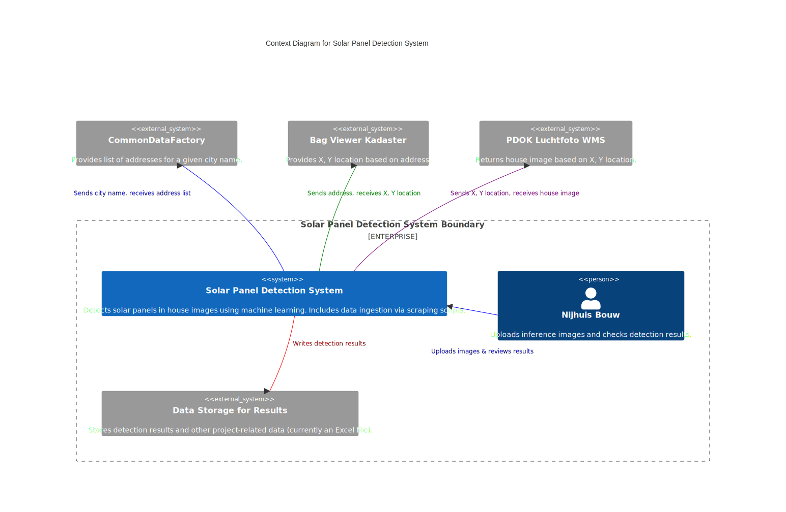

Technical Design
1. Introduction
This document is about the technical part of this solar detection project. What this project is about and what the goals and requirements are, is described extensively in the functional design. The technical design is documented using the arc42 template and will tailor it for this project if needed. The architectural diagrams should be in c4/mermaid. If you are currently reading this on pdf, you can switch to our hosted web-version for better readibility.
2. Constraints
- Technical constraints:
- Hardware, software and cloud providers should be free or open source
- Cloud providers: Either Cloud Student Accounts (e.g. Azure or AWS) or Saxions AWS Account
- Our own machine is not ideal, since we train on images (limited computing power if we have no computation server)
- Operational constraints:
- Deadline: 20. April 2025
- Personell: Group of two software engineers/computer scientists, with limited knowledge in DataScience/ML
- We have the Training data given by the project, which is publicly available. However the Inference data, is not available, and needs to be scraped by us. Training Data (houses of south germany) and Inference data (houses of netherlands), will therefore be not of the same format and region.
3. System Scope and Context
This section provides an overview of the system landscape, showing who interacts with our system and how it fits into the environment. It includes two high-level context diagrams, with a primary focus on the Solar Panel Detection System.
3.1 Context Diagrams
Solar Panel Detection System - Context Diagram

The Solar Panel Detection System is responsible for analyzing house images to detect solar panels. It also includes a lightweight data ingestion process (Python-based) that automatically fetches aerial images of Dutch houses from public services.
Key Stakeholders and External Systems:
- Stakeholders
- Nijhuis Bouw (Client): Submits images for inference and checks detection results.
- External Services
- CommonDataFactory: Receives a city name and returns a list of addresses.
- Bag Viewer Kadaster: Takes an address and provides the corresponding X, Y coordinates.
- PDOK Luchtfoto WMS: Takes X, Y coordinates and returns the aerial image of a house.
- Data Storage for Results: Currently an Excel file (owned by Selin) that stores detection outputs alongside other project data (e.g., energy label calculations). A move to a more robust database solution is under consideration.
- CommonDataFactory: Receives a city name and returns a list of addresses.
4. Solution Strategy
The primary objective of this project is to implement a fully automated, monolithic Data and ML Pipeline for detecting solar panels in aerial or satellite images and associating these detections with Dutch house IDs. We draw on a simplified ML pipeline—focusing on:
- Data Ingestion
- Data Preprocessing
- Model Training
- Model Deployment
- Model Validation
- Model Feedback
Given our limited resources and small team, we choose a monolithic approach to keep the architecture straightforward. Each stage of the pipeline (Ingestion, Preprocessing, Training, etc.) is modular enough to be refined or replaced without large-scale re-engineering.
We also break down the project into three core processes:
- Continuous Training Pipeline – Establishes the typical ML lifecycle to keep the model up-to-date.
- Dutch Houses Scraping Process – Automates retrieval of Dutch house imagery from public sources.
- Inference/Detection Process – Uses the trained model to detect solar panels in newly scraped images and link them to BAG IDs.
Note: Some ML phases—like Data Validation, Model Tuning, and Model Analysis—are out of scope. We focus on ensuring a functional end-to-end pipeline rather than a fully optimized or deeply validated model.
Key Design Considerations
Automation & Reproducibility
We use an orchestration tool (e.g., Apache Airflow) to automatically schedule and run all pipelines, from scraping to inference.Accuracy & Domain Adaptation
The training data (Germany) differs from where inferences are run (the Netherlands). We plan to compare multiple detection frameworks (e.g., YOLO, Faster R-CNN). Thorough hyperparameter tuning is out of scope, but we aim for a robust initial baseline.House ID Linking
An internal subsystem queries Kadaster and PDOK APIs to map detected solar panels to Dutch addresses (BAG IDs). Results can then be merged into datasets used for energy label calculations.
4.1 Detailed Approach
4.1.1 Continuous Training Pipeline
This pipeline manages how we train (and occasionally re-train) the solar panel detection model using labeled satellite images from Germany.
Data Ingestion & Versioning
- What We Do
- Store new training data (images + bounding box labels) in an object store (e.g., MinIO).
- Consider optionally using DVC or Git LFS for versioning.
- Store new training data (images + bounding box labels) in an object store (e.g., MinIO).
- Rationale
- Ensures reproducibility of training runs.
- Straightforward for the team to upload new data without manual overhead.
- Ensures reproducibility of training runs.
Data Validation
- Out of Scope
- We are not performing extensive checks or anomaly detection.
- We assume provided data is valid and labeled correctly.
- We are not performing extensive checks or anomaly detection.
Data Preprocessing
- What We Do
- Minimal or no preprocessing; possibly convert images to a uniform format (e.g., resizing, channel standardization).
- Minimal or no preprocessing; possibly convert images to a uniform format (e.g., resizing, channel standardization).
- Technologies
- OpenCV or Pillow for image transformations as needed.
Model Training
- What We Do
- Train an object detection model (likely YOLOv5 or Faster R-CNN) on the labeled German data.
- Track basic performance metrics (e.g., accuracy, mAP) using MLflow.
- Train an object detection model (likely YOLOv5 or Faster R-CNN) on the labeled German data.
- Focus
- Achieve a baseline model suitable for adaptation to Dutch imagery later.
- Full hyperparameter tuning is not included.
- Achieve a baseline model suitable for adaptation to Dutch imagery later.
Model Validation
- Minimal
- We do log key metrics (precision, recall, mAP) on a small validation set.
- No strict pass/fail criteria for automatic gating; we simply observe if training is successful.
- We do log key metrics (precision, recall, mAP) on a small validation set.
Model Deployment
- What We Do
- Save the trained model artifacts (weights, config) back to MinIO with a version label.
- The model is then considered the “latest” for the inference pipeline to load.
- Save the trained model artifacts (weights, config) back to MinIO with a version label.
Model Feedback
- What We Do
- Manual checks by developers or subject-matter experts.
- No automated feedback loop or active learning in place at this time.
- Manual checks by developers or subject-matter experts.
4.1.2 Dutch Houses Scraping Process
This process retrieves real-world images from Dutch addresses, serving as the inference dataset source.
- Inputs
- User or automated trigger specifying a city name (e.g., “Enschede”).
- User or automated trigger specifying a city name (e.g., “Enschede”).
- Steps
- Address List: Fetch addresses from CommonDataFactory.
- Coordinate Lookup: For each address, query Kadaster (Bag Viewer) to obtain X/Y coordinates and BAG ID.
- Download Aerial Images: Use PDOK Luchtfoto WMS to get top-down house images.
- Storage: Save each image in MinIO, tagged with its BAG ID.
- Address List: Fetch addresses from CommonDataFactory.
- Technologies
- Python Scripts (the “webscraper”), possibly run by Apache Airflow.
- Requests library for API calls; data stored in MinIO.
- Python Scripts (the “webscraper”), possibly run by Apache Airflow.
- Outcome
- A curated set of Dutch house images (with associated metadata) ready for the inference/detection process.
4.1.3 Inference/Detection Process
Once we have Dutch house images and a trained model, we apply the detection logic to identify solar panels and associate them with BAG IDs.
Gathering New Images
- What We Do
- Monitor MinIO for newly scraped images.
- Triggered periodically (e.g., daily) by Airflow or on-demand by the user.
- Monitor MinIO for newly scraped images.
Model Loading
- What We Do
- Retrieve the “latest” model artifact from MinIO.
- Load weights and config into a YOLO or Faster R-CNN inference setup.
- Retrieve the “latest” model artifact from MinIO.
Running Detection
- Steps
- Perform solar panel detection on each image.
- Extract bounding boxes and confidence scores.
- Merge detection outcomes with existing house metadata (BAG ID).
- Perform solar panel detection on each image.
- Technologies
- PyTorch or TensorFlow-based detection libraries.
- MLflow can be used to log basic inference metrics if desired.
- PyTorch or TensorFlow-based detection libraries.
Storing Results
- What We Do
- Write final detection results (house ID, presence of solar panel, confidence) to a PostgreSQL table or a CSV.
- These results can then be integrated with other datasets (e.g., energy labels).
- Write final detection results (house ID, presence of solar panel, confidence) to a PostgreSQL table or a CSV.
- Model Feedback
- Largely manual. If users find inaccuracies, they inform developers for potential retraining or improvements.
4.2 Technology Selection and Rationale
In this project, we aim to build a Machine Learning Object Detection System with end-to-end automated pipelines. Based on our solution strategy, which is based on our functional requirements, we can deduce the following type of technologies needed:
- Training Pipeline
- Storing data/images
- Versioning data/images
- Processing data/images
- Training a model
- Tracking the model (validation, deployment, feedback)
- Storing data/images
- Inference Pipeline
- Loading trained models
- Performing real-time predictions
- Storing the inference results
- Serving predictions via an API
- Loading trained models
To support these pipelines, the following technology categories have been identified:
Programming Language + API Framework
Core development environment for building, training, and serving ML models.Object Storage
Required for handling large volumes of image data (or any unstructured data).Data Versioning Tool
Ensures reproducibility and manageability of large datasets across multiple training iterations.Storage for Result Data
Structured or semi-structured storage for logs, metadata, or inference outputs.ML Experiment Tracking Tool
Logs hyperparameters, metrics, and artifacts to maintain a clear record of experiments and model versions. Can deploy models.Cloud Platform
Provides infrastructure services (compute, storage, networking).Orchestration / Automation Tool
Coordinates the entire end-to-end workflow (data ingestion, model training, inference jobs).
4.2.1 Comparing Technologies
Programming Language + API Framework
For choosing the programming language, we can keep the comparison short. Basically, we have the following requirements for choosing the programming language: - needs to have libraries, that can process data easily - needs to have libraries, that can train ML-Models (object detection) easily - needs to be well adopted and have big community, so we as newbies, can research if we are stuck with problems - needs to be compatible, with the work already made by selin and her knowledge - needs to have an API Framework
Libraries and ability to build data pipelines: - Based on multiple sources, Python, R and Julia are the most used programming languages, which are widely used for data science purposes and that lets you build pipelines datacamp, Rice Engineering department of Computer Science, maryville education. Also a lot of them list sql, but sql is only a query language for relational datbases, and there you cannot actually build pipelines.
Compatibility with our environment: - The scripts that selin provided to us, are python scripts, and selin, is most familiar with python.
Community: - Based on the yearly Stackoverflow survey from 2024, 51% of the respondents uses python, 4.3% use R and only 1.1% use Julia.
API-Framework availability: - All of the languages also have api frameworks e.g. FastAPI(Python), RestReserve(R), Genie(Julia)
Choice
Based on the research, we probably technically could develop this system using all of the languages and framework.
But in case of ease of implementation, we think python is best since it has the biggest community. Also, we will still need to choose other technologies, like Experiment tracking, Databases, etc. Therefore we need to choose a well adopted and wide spread programming language, that has well used libraries to use also the other technologies in combination with our chosen programming language.
Also Selin and both developers, are well known in python, and it makes it easier to work with selin. Also in the end, she needs to adapt our work for the future purposes of the NOWATT Project.
Object Storage
This section follows our data-driven, step-by-step methodology for selecting the most suitable object storage solution. Given that our project involves managing a significant volume of image data and potentially large inference outputs, object storage is a critical component.
1. Define Requirements
- Scalability & Capacity
- Must handle potentially large volumes of images (satellite or otherwise).
- Should scale seamlessly as our dataset grows (especially if we anticipate adding data continuously).
- Must handle potentially large volumes of images (satellite or otherwise).
- S3 Compatibility
- Prefer an S3-compatible interface for easy integration with common ML tools and data workflows.
- Cost-Effectiveness
- Since this is a 10-week project with limited resources, we need to be mindful of budget and TCO (Total Cost of Ownership).
- Ease of Integration
- Should integrate smoothly with the Python ecosystem, as well as any data versioning or orchestration tools.
- Reliability & Availability
- Must ensure data durability (backups, replication) and consistent uptime for training/inference pipelines.
2. Establish Evaluation Criteria
| Criterion | Description |
|---|---|
| Scalability | Ability to handle increasing data volumes without major overhead |
| Performance | Read/write speeds, especially with large file sizes |
| S3 Compatibility | Support for S3 APIs or compatible SDKs |
| Integration | Ease of connecting with ML frameworks, data versioning tools |
| Cost | Pricing model (storage, egress), licensing fees if any |
| Security & Compliance | Built-in encryption, IAM, access control, compliance certifications |
| Maintainability | Overhead for setup, updates, and ongoing management |
| References / Adoption | Community usage, official documentation, case studies |
3. Candidate Solutions
Below is a brief comparison of four commonly considered object storage options:
| Object Storage | Scalability | Performance | S3 Compatibility | Integration | Cost | Security & Compliance | Maintainability | References / Adoption |
|---|---|---|---|---|---|---|---|---|
| MinIO | Horizontally scalable; can run on-prem or cloud | Generally good; comparable to AWS S3 for typical workloads | S3-compatible API | Strong Python support, easy to connect with ML libraries | Self-hosted (infrastructure costs), no license fees | Supports encryption, IAM, compliance depends on self-setup | Medium (requires some DevOps) | Popular in self-managed & hybrid deployments |
| AWS S3 | Virtually unlimited scale, managed by AWS | High performance, global availability | Native S3 | Excellent Python SDK (boto3), wide tool integration | Pay-as-you-go; can become costly for high egress | Full compliance suite (e.g., SOC, HIPAA) with managed IAM | Low (fully managed) | Industry-standard, widely adopted |
| Azure Blob | Scales with Azure platform | Similar to S3 in performance | Not S3 by default, but can use bridging tools | Good integration with Azure ML, Python SDK | Pay-as-you-go; egress fees apply | Offers enterprise compliance, robust role-based access | Low (fully managed, if on Azure) | Popular in Microsoft-centric ecosystems |
| GCP Storage | Scales with Google Cloud | High performance, multi-region support | XML/JSON API, not S3 out-of-the-box, but partial compatibility | Python SDK (google-cloud-storage) | Pay-as-you-go; egress fees apply | Comprehensive security features, compliance certifications | Low (fully managed, if on GCP) | Popular in Google Cloud ML solutions |
4. Gathering Data from Sources
- Official Documentation
- Examined feature guides and reference architectures from MinIO, AWS, Azure, and GCP.
- Examined feature guides and reference architectures from MinIO, AWS, Azure, and GCP.
- Community Benchmarks & Case Studies
- Looked at performance benchmarks published by open-source communities (e.g., comparing MinIO vs. AWS S3 for throughput).
- Reviewed real-world case studies indicating the ease of integration with Python-based ML flows.
- Looked at performance benchmarks published by open-source communities (e.g., comparing MinIO vs. AWS S3 for throughput).
- Industry & Team Constraints
- Considered the team’s DevOps expertise and budget constraints for a short 10-week project.
5. Preliminary Observations
- MinIO is self-hosted and works well for on-prem or hybrid environments, providing S3 compatibility at minimal licensing cost. However, it requires more DevOps effort than fully managed cloud services.
- AWS S3, Azure Blob, and GCP Storage are managed services offering high reliability and easy integration, but cost can escalate with large-scale storage or high egress traffic.
- Given we have a 10-week timeline, choosing a fully managed solution might reduce operational overhead—unless there is an existing on-prem requirement or preference.
In the next section, we will finalize our object storage selection and outline the rationale behind that choice. We’ll also consider the project’s specific constraints (e.g., budget, DevOps capabilities, data growth projections) to arrive at a balanced, practical decision.
Data Versioning Tool
Storage for Result Data
ML Expriment Tracking Tool
Cloud Platform
Orchestration / Automation Tool
4.2.2 Selected Technologies
5. Building Block View
This section outlines the overall structure of the Solar Panel Detection System, showing the main containers and their interactions. The external storage for results can optionally be integrated into the PostgreSQL database if desired.
5.1 Container View
The diagram above shows the internal structure of the Solar Panel Detection System and how it interacts with external systems and users:
- Airflow orchestrates the entire pipeline by scheduling scraping, training, and inference tasks.
- Solardetection Service performs data collection (addresses, imagery), model training, and batch inference. It acts as the core logic of the system.
- Solardetection API (FastAPI) provides real-time detection by accepting uploaded images and returning predictions. It loads the latest trained model artifacts (from MinIO) and may reuse inference logic from the pipeline.
- MLflow is used by the pipeline to log experiments, including parameters, metrics, and models. It stores metadata in PostgreSQL.
- PostgreSQL serves as a central relational database for both MLflow metadata and detection results. It is written to by both the pipeline and MLflow.
- MinIO serves as an object storage system. The pipeline stores input images and trained model artifacts here. FastAPI retrieves model artifacts from MinIO for real-time predictions.
External Systems
- CommonDataFactory provides addresses for a given city.
- Bag Viewer Kadaster resolves addresses to geographic coordinates.
- PDOK returns aerial images for given coordinates.
- Data Storage for Results (CSV) is an external file where final batch detection results are exported. It contains additional house-level energy data and may be merged into the PostgreSQL database in the future.
- Nijhuis Bouw is the external user who uploads house images and retrieves detection results via the API.
5.2 Component View
Below, we focus on three key containers that make up our system: the Solarpanel Detection Service, MLflow, and Airflow. Other containers are either external services or less critical for this architectural overview.
5.2.1 Solarpanel Detection Service Container
The diagram below shows the Solarpanel Detection Service container broken down into three internal components (or pipelines). We’ve removed textual annotations on the relationships to keep the view concise. Each pipeline handles a specific part of the data flow:
Continous Training Pipeline
This is the primary pipeline for continually training the model. Whenever new training data arrives, it runs the full training process, tracking performance and metadata in MLflow. It also deploys any newly trained model.Inference Process
When new data (e.g., images) is uploaded, this pipeline uses the latest model to detect solar panels, then stores the results in PostgreSQL.Data Ingestion Process
Since manually collecting Dutch aerial imagery is impractical, the Data Ingestion component automates data retrieval. After a user specifies a city, it fetches relevant housing addresses, their coordinates, and associated aerial images. Each house image is tied to a unique House ID, enabling the detection results to be merged with existing energy-related data.
The following diagram highlights these three pipelines within the Solarpanel Detection Service. For details about each pipeline’s runtime flow, see Chapter 6.

5.2.2 MlFlow Container
MLflow lists the following components that can be used on their documentation.: - MLflow Tracking - MLflow Projects - MLflow Models - MLflow Registry
For this project only MLflow Tracking is used. Here is a brief description of what MLflow tracking is from their website: > MLflow Tracking is an API and UI for logging parameters, code versions, metrics, and artifacts when running your machine learning code and > for later visualizing the results. You can use MLflow Tracking in any environment (for example, a standalone script or a notebook) to log > results to local files or to a server, then compare multiple runs. Teams can also use it to compare results from different users.
5.2.3 Airflow Container
The Airflow website provides a detailed component diagram of Airflow: https://airflow.apache.org/docs/apache-airflow/2.5.3/core-concepts/overview.html.
In our project, Airflow schedules tasks (defined in DAGs) to run the Python scripts that implement our solar panel detection logic. Specifically:
- DAG Files (Directed Acyclic Graph files) define tasks and dependencies, telling Airflow what to run and when.
- Workers (spawned by the Executor) then execute these tasks. When a task is triggered, the Worker loads and runs our Python code, which in turn calls out to the Solar Panel Detection Service.
In other words, the DAG files serve as the Airflow “recipe” for orchestrating our solar panel detection scripts; the scripts themselves live in our codebase (deployed to the Airflow environment) and are executed on Airflow Workers. 
6. Runtime View
Below, we illustrate the three main pipelines within the Solardetection Service via dynamic runtime diagrams. Each pipeline corresponds to a distinct process (ingestion, training, and inference).
6.1 Data Ingestion Process

The Data Ingestion process begins when Nijhuis provides a city name to the Solardetection API. The API delegates the request to the Data Ingestion component within the Solardetection Service, which then interacts with various external services:
- CommonDataFactory – Provides a comprehensive list of addresses for the city.
- Bag Viewer Kadaster – Translates each address into X,Y coordinates and returns a unique House ID.
- PDOK Luchtfoto WMS – Retrieves aerial imagery for each address, using the provided coordinates.
As shown in the diagram, the Data Ingestion component stores retrieved images in MinIO (S3-compatible API). This ensures the images can be readily accessed by subsequent steps or other pipelines.
Optional Inference Trigger
Once the ingestion process completes and the data is saved (in both the database and MinIO), you can manually initiate the Inference Pipeline (or have it triggered automatically if desired). This follow-up stage uses the newly gathered images and metadata to detect solar panels, as part of your broader data processing workflow.
6.2 Training Pipeline

The Training Pipeline ensures that new or updated training data (images and labels) can be processed seamlessly to produce a refreshed solar panel detection model. Here’s an overview of the main steps:
Data Upload
A user (e.g., Nijhuis) manually places new training images and metadata in the MinIO object store.Airflow Orchestration
An Airflow DAG (the Training DAG) periodically checks the relevant MinIO bucket. If new data is present, it triggers the Training Pipeline within the Solardetection Service.Model Training
The Training Pipeline retrieves the images from MinIO, runs the training process (e.g., YOLO or another ML framework), and collects metrics (accuracy, loss, etc.).Logging and Versioning
Training metrics and model parameters are logged in MLflow for future reference. The newly trained model artifact is also stored back into MinIO under a versioned location.Metadata Storage
Finally, relevant training run details (e.g., model version, timestamp) are written to PostgreSQL. This allows easy tracking of which model was trained under specific conditions.
By automating these steps, the pipeline helps maintain an up-to-date model with minimal manual oversight, ensuring detection accuracy improves over time.
6.3 Inference Pipeline
Below is the dynamic diagram detailing how new inference images are processed by the system to detect solar panels:
Manual Upload
Nijhuis (the user) manually places new inference images in the MinIO inference bucket via an S3-compatible interface.Airflow Inference DAG
An Inference DAG within Airflow checks this bucket daily (or on a specified schedule). Once it detects newly uploaded images, it triggers the inference pipeline.Inference Execution
The Inference Pipeline component in the Solardetection Service loads the YOLO model and any required files from MinIO. It processes the images to detect solar panels (bounding boxes, confidence scores, etc.).Results Storage
Upon completion, the pipeline stores the detection results in PostgreSQL.
This automated setup allows the system to routinely scan for and process newly uploaded images without manual monitoring—beyond the initial image upload by the user.
7. Deployment View
Our entire Solar Panel Detection System is deployed on Microsoft Azure, leveraging a Student Account to minimize infrastructure costs. The diagram below provides a high-level overview of how the system’s containers (Airflow, Solardetection Service, FastAPI, MLflow, PostgreSQL, and MinIO) are hosted and interact within the Azure environment.
Key Points: - We package each component as a Docker container, ensuring consistent and reproducible deployments. - The Azure environment offers easy management of compute resources, allowing us to scale or adjust configurations if needed. - PostgreSQL and MinIO are co-located to simplify data access and reduce latency, while MLflow manages experiment tracking. - Airflow handles scheduling and orchestration, triggering tasks to run on the Solardetection Service. - This setup meets our current project needs without excessive overhead, aligning well with the constraints of a student account.
8. Cross-cutting Concepts
- Solution to fetch dutch housing images with appropriate bounding box size (not done yet)
9. Risks and Technical Debt
Risks: - Training data is different format/and location than inference data => model might perform bad
Technical Debts: - To reach the goal to have an automated process for data ingestion, inference data(dutch housing images), it is hard in the last step, to get the bounding box of exactly one house! Unclear what offset for the boundingbox to use for houses in different size. Maybe calculated by size of house?